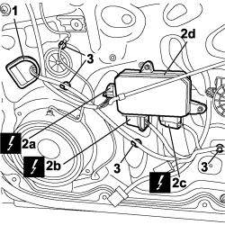
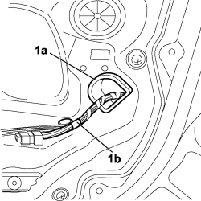

5505B10 FRONT DOOR WIRING (ONE), LEFT OR RIGHT - R.R. WITH WATER GUARD OR FRAME DETACHED
- Path
- Procedures > 55 ELECTRICAL EQUIPMENT > 5505 INSTRUMENT/GAUGE ELECTRICAL CIRCUITS > 5505B DOOR, BOOT AND BONNET WIRING > 5505B10 FRONT DOOR WIRING (ONE), LEFT OR RIGHT - R.R. WITH WATER GUARD OR FRAME DETACHED
- Kind
- repair procedure (removal / refitting; the operation number is the code)
- Applies to
- all engines; all production periods
- Interactive page
- https://sloeber94.github.io/elrnDB-fCrm/en/#/194000681
Applies to: all engines; all production periods
 Removing
Removing
 Refitting
Refitting- Turn the ignition key to the OFF position.
- Disconnect the negative battery terminal.
Description | Connector | |
|---|---|---|
BATTERY |
1. Disconnect the electrical connection (1a) for the speaker (1b).
Description | Connector | |
|---|---|---|
1a | SPEAKER IN LEFT FRONT DOOR |
Description | Connector | |
|---|---|---|
1a | SPEAKER IN RIGHT FRONT DOOR |
2. Disconnect the electrical connection (2a) for the window opening motor (2b).
Description | Connector | |
|---|---|---|
2a | LEFT FRONT ELECTRIC WINDOW MOTOR |
Description | Connector | |
|---|---|---|
2c | RIGHT FRONT ELECTRIC WINDOW MOTOR |

Applies to: all engines; all production periods
1. Prise out the gaiter protecting the hole for passing the cable to the door exterior.
2. Release the three electrical connections (2a, 2b, 2c) of the control unit (digital network node) (2d) on the door from their anchorages and disconnect.
Description | Connector | |
|---|---|---|
2a | DRIVER'S DOOR CONTROL UNIT (NPG) |
Description | Connector | |
|---|---|---|
2b | DRIVER'S DOOR CONTROL UNIT (NPG) |
Description | Connector | |
|---|---|---|
2c | DRIVER'S DOOR CONTROL UNIT (NPG) |
3. Release the four buttons securing the wiring to the support frame using the special tool.

Applies to: all engines; all production periods
1. Prise out the gaiter (1a) protecting the hole (1b) for passing the cable to the door interior.
Withdraw and extract the wiring by passing the connectors through the holes

Applies to: all engines; all production periods
Refitting
Removing- Check that the wiring is not damaged.
- Place the wiring in position on the front door taking passing the connectors carefully through the openings.
- Secure the four buttons fastening the wiring to the support frame.
- Fit the gaiter protecting the hole for passing the cable to the door interior.
- Connect the three door control unit electrical connections (digital network node) and secure with anchorages.
Description | Connector | |
|---|---|---|
DRIVER'S DOOR CONTROL UNIT (NPG) |
- Fit the gaiter protecting the hole for passing the cable to the door exterior.
- Connect the electrical connection for the windscreen wiper motor.
Description | Connector | |
|---|---|---|
LEFT FRONT ELECTRIC WINDOW MOTOR |
Description | Connector | |
|---|---|---|
RIGHT FRONT ELECTRIC WINDOW MOTOR |
- Connect the electrical connection for the speaker.
Description | Connector | |
|---|---|---|
SPEAKER IN LEFT FRONT DOOR |
Description | Connector | |
|---|---|---|
SPEAKER IN RIGHT FRONT DOOR |
- Connect the negative battery terminal.
Description | Connector | |
|---|---|---|
BATTERY |